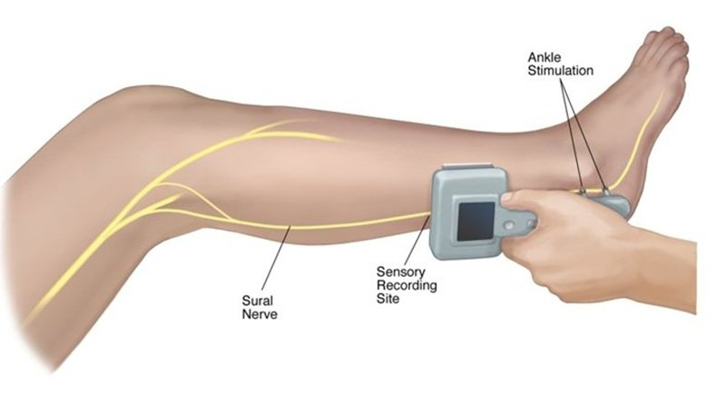

Neurology
DPNCheck
DPNCheck is a fast, accurate, and quantitative test to evaluate peripheral neuropathies. DPNCheck is designed for use at the point of care to detect and stage peripheral neuropathies. The device measures nerve conduction velocity and response amplitude of the sural nerve in the lower leg. These parameters are sensitive and specific biomarkers for peripheral neuropathy.
Key Features
- Point-of-care test of sural nerve conduction
- Standard biomarker for peripheral neuropathy — sensitive and specific
- Quantitative assessment of nerve function
- Identifies pre-clinical peripheral neuropathy
Easy Operation
- 30–60 seconds per test
- Easily implemented in the clinic or home setting by medical assistants or other staff
- Reports standard, readily understood nerve conduction parameters
- Embedded quality control to ensure integrity of results
